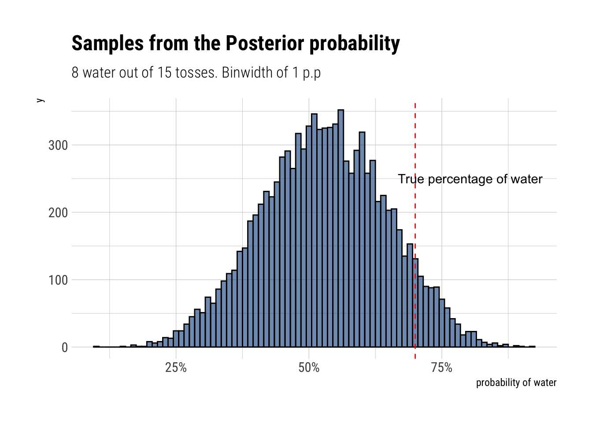
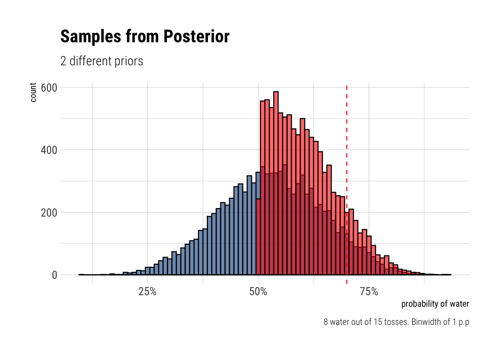
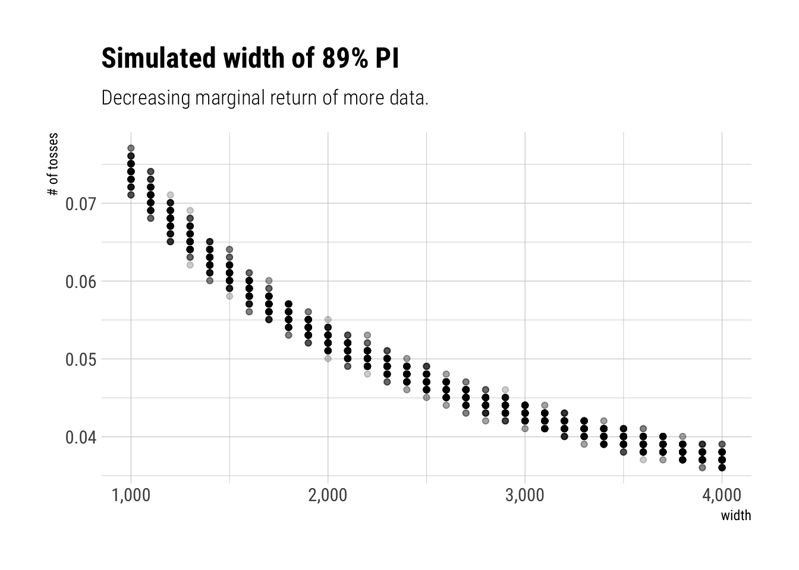
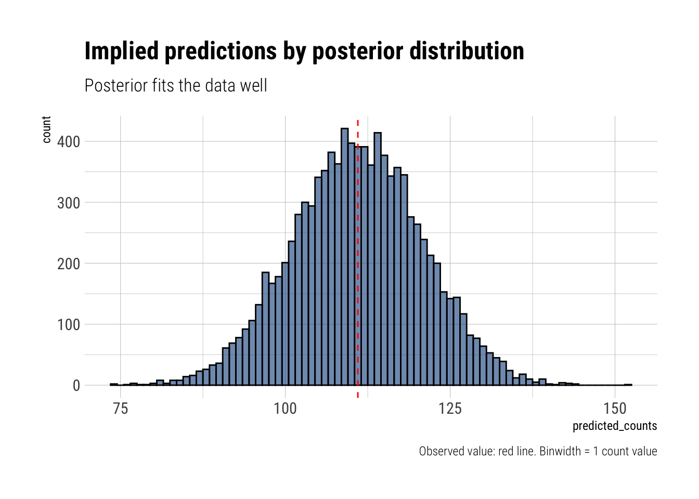
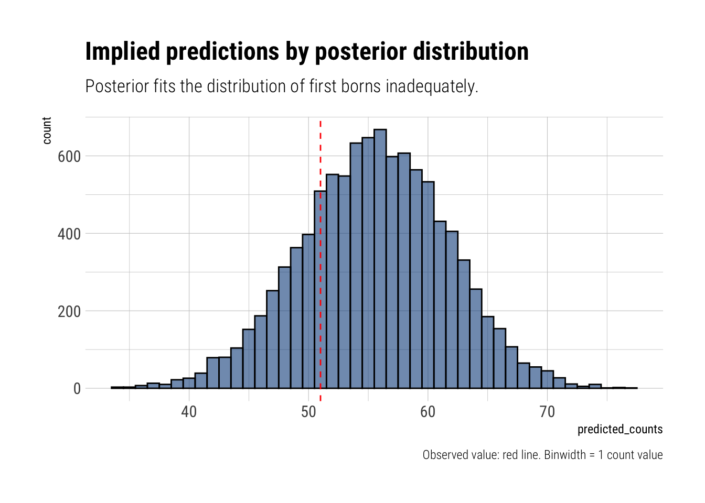
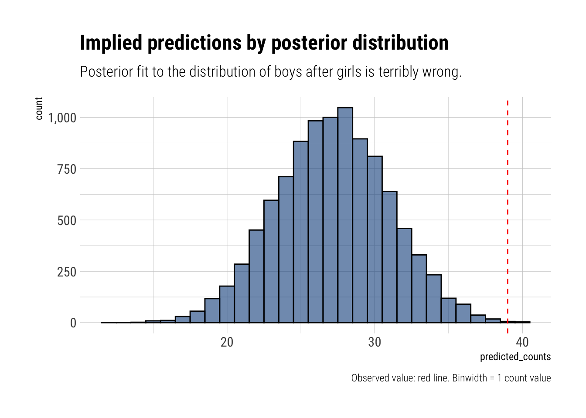

Week 1
Week 1 tries to go as deep as possible in the intuition and the mechanics of a very simple model. As always with McElreath, he goes on with both clarity and erudition.
Suppose the globe tossing data had turned out to be 8 water in 15 tosses. Construct the posterior distribution, using grid approximation. Use the same flat prior as before.
[1] 0.5288668Start over in 1, but now use a prior that is zero below p = 0.5 and a constant above p = 0.5. This corresponds to prior information that a majority of the Earth’s surface is water. What difference does the better prior make? If it helps, compare posterior distributions (using both priors) to the true value p = 0.7.

By rejecting altogether from the beginning the possibility of having less than the half of the world covered with water, the model with the new prior piles on more plausibility on the values closer to the true value. Thus, the more informative prior helps our inference.
This problem is more open-ended than the others. Feel free to collaborate on the solution. Suppose you want to estimate the Earth’s proportion of water very precisely. Specifically, you want the 99% percentile interval of the posterior distribution of p to be only 0.05 wide. This means the distance between the upper and lower bound of the interval should be 0.05. How many times will you have to toss the globe to do this? I won’t require a precise answer. I’m honestly more interested in your approach.
Practice from Chapter 3
Easy
How much posterior probability lies below p = 0.2?
The probability below p = 0.2 is 0.1%How much posterior probability lies above p = 0.8?
The probability above p = 0.8 is 9.1%How much posterior probability lies between p = 0.2 and p = 0.8
The probability is 90.8%20% of the posterior probability lies below which value of p?
20%
0.5163163 20% of the posterior probability lies above which value of p?
80%
0.7427427 Which values of p contain the narrowest interval equal to 66% of the posterior probability?
|0.66 0.66|
0.5135135 0.7697698 Which values of p containt 66% of the posterior probability, assuming equal posterior probability both below and above the interval?
17% 83%
0.4961562 0.7569269 Medium
HPDI 90% for p
|0.9 0.9|
0.3343343 0.7217217 Posterior predictive check. 8 tosses in 15, prediction averaged over our posterior distribution.
[1] 0.1499Using the posterior distribution contracted from the 8/15 data, now calculate the probability of observing 6 water in 9 tosses.
[1] 0.1842Different prior
HPDI 90% for p
|0.9 0.9|
0.5005005 0.7097097 Posterior predictive check. 8 tosses in 15, prediction averaged over our posterior distribution.
[1] 0.163Using the posterior distribution contracted from the 8/15 data, now calculate the probability of observing 6 water in 9 tosses.
[1] 0.2353Number of tosses have a 99% percentile interval to be only 0.05 wide.
We know the true value of our problem: \(p = 0.7\). We will simulate data for many Ns and find out how precisely we can estimate the interval for each of these values. We will repeat these simulations for each value of N 100 times. Then, we plot the different bounds that we get.

It seems we would have to toss the worldarround 2000 times to get a bound close to 0.05. The marginal benefit that we get, in terms of tighting our estimated bound, decreases as we toss more and more. The greates benefits of increasing the data seem to be at the beginning.
Hard
[1] 1 0 0 0 1 1 0 1 0 1 0 0 1 1 0 1 1 0 0 0 1 0 0 0 1 0 0 0 0 1 1 1 0 1 0 1 1
[38] 1 0 1 0 1 1 0 1 0 0 1 1 0 1 0 0 0 0 0 0 0 1 1 0 1 0 0 1 0 0 0 1 0 0 1 1 1
[75] 1 0 1 0 1 1 1 1 1 0 0 1 0 1 1 0 1 0 1 1 1 0 1 1 1 1 [1] 0 1 0 1 0 1 1 1 0 0 1 1 1 1 1 0 0 1 1 1 0 0 1 1 1 0 1 1 1 0 1 1 1 0 1 0 0
[38] 1 1 1 1 0 0 1 0 1 1 1 1 1 1 1 1 1 1 1 1 1 1 1 1 0 1 1 0 1 1 0 1 1 1 0 0 0
[75] 0 0 0 1 0 0 0 1 1 0 0 1 0 0 1 1 0 0 0 1 1 1 0 0 0 0Using grid approximation, compute the posterior distribution for the probability of a birth being a boy. Assume a uniform probability…
So, set up a binomial likelihood with \(n, k\):
[1] 200 111Maximum posterior probability is obtained at 0.56A logical answer, considering the slight majority of boys at the sample.
Draw 10000 random samples from the posterior distribution… HPDI for 50%, 89%, and 97%
|0.97 |0.89 |0.5 0.5| 0.89| 0.97|
0.4848485 0.5050505 0.5454545 0.5858586 0.6060606 0.6262626 Check that the model’s implied predictions fit the actual count

Now compare 10,000 counts of boys from 100 simulated first borns only to the number of boys in the first births. How does the model look in this light

Now the model seems to be underperforming. It’s implied prediction for 100 boys is way larger thatn the actual observed value.
The model assumes that sex of first and second births are independent. Validate this assumption.
If the sex of first and second births are independent, after condintioning on the first being a girl, the probability of being a boy should be the same as in the whole sample. Let’s predict with our model conditioning on the boy having an older sister.

Our model only assumes a 0.06% to the observed valueThe model under predicts the number of boys that have older sisters. It seems that, in our sample, the sex of the first and second births are not independent. It may be that our sample is biased. Or maybe people keep having babies until they have a boy. Who knows, right?